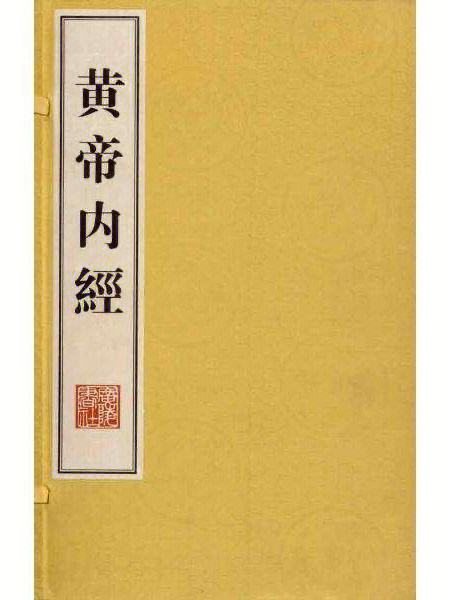

四大经典
《黄帝内经》
简称《内经》，原书18卷。其中9卷名《素问》；另外9卷无书名，汉晋时被称为《九卷》或《针经》，唐以后被称为《灵枢》，非一人一时之作，主要部分形成于战国至东汉时期。每部分各为81篇，共162篇。《素问》主要论述了自然界变化的规律、人与自然的关系等；《灵枢》的核心内容为脏腑经络学说。它是中国现存最早的研究人的生理学、病理学、诊断学、治疗原则和药物学的传统医学巨著。它总结了春秋至战国时期的医疗经验和学术理论，并吸收了秦汉以前有关天文学、历算学、生物学、地理学、人类学、心理学等学科，运用阴阳、五行、天人合一的理论，对人体的解剖、生理、病理以及疾病的诊断、治疗与预防做了比较全面的阐述。在理论上建立了中医学上的“阴阳五行学说”“脉象学说”“藏象学说”“经络学说”“病因学说”“病机学说”“病症”“诊法”“论治”及“养生学”“运气学”等学说。反映了中国古代天人合一的思想，确立了中医学独特的理论体系，成为中国医药学发展的理论基础和源泉。
《难经》
中医理论著作。原名《黄帝八十一难经》，3卷。原题秦越人撰。“难”是“问难”之义，或作“疑难”解。“经”乃指《内经》，即问难《内经》。作者把自己认为难点和疑点提出，然后逐一解释阐发，部分问题做出了发挥性阐释。
全书共分八十一难，对人体腑脏功能形态、诊法脉象、经脉针法等诸多问题逐一论述。但据考证，该书是一部托名之作。约成书于东汉以前（一说在秦汉之际）。该书以问难的形式，亦即假设问答、解释疑难的体例予以编纂，故名为《难经》。内容包括脉诊、经络、脏腑、阴阳、病因、病理、营卫、俞穴、针刺等基础理论，同时也列述了一些病证。该书以基础理论为主，结合部分临床医学，在基础理论中更以脉诊、脏腑、经脉、俞穴为重点。其中1～22难论脉；23～29难论经络；30～47难论脏腑，48～61难论病；62～68难论俞穴；69～81难论针法。书中对命门和三焦的学术见解以及所论七冲门（消化道的7个冲要部位）和八会（脏、腑、筋、髓、血、骨、脉、气等精气会合处）等名目，丰富和发展了中医学的理论体系。该书还明确提出“伤寒有五”（包括中风、伤寒、湿温、热病、温病），并对五脏之积、泄痢等病多有阐发，为后世医家所重视。全书内容简扼，辨析精微，在中医学典籍中常与《内经》并提，被认为是最重要的古典医籍之一。有多种刊本和注释本。
《伤寒杂病论》
东汉张仲景所著。张仲景（公元150年—219年）名机，字仲景，南阳人。
《神农本草经》
又名《神农本草》，简称《本草经》、《本经》，中国现存最早的药学专著。